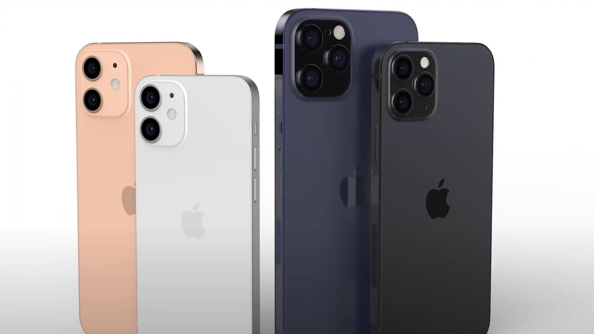
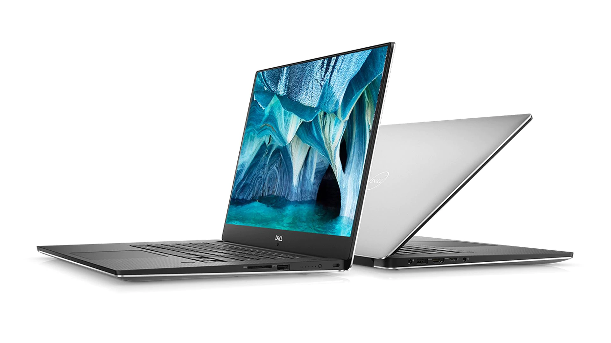
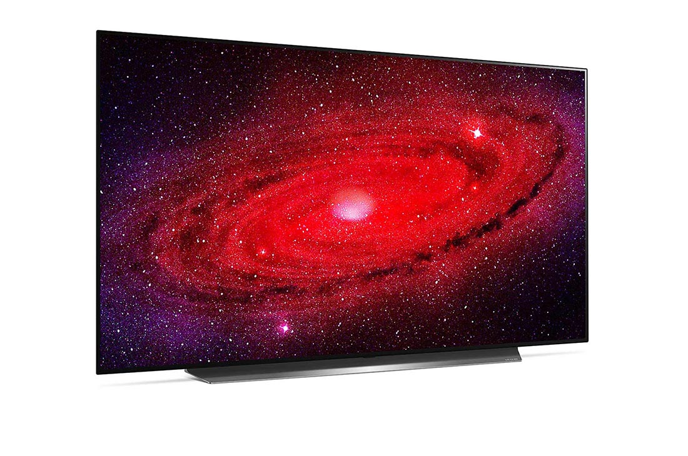
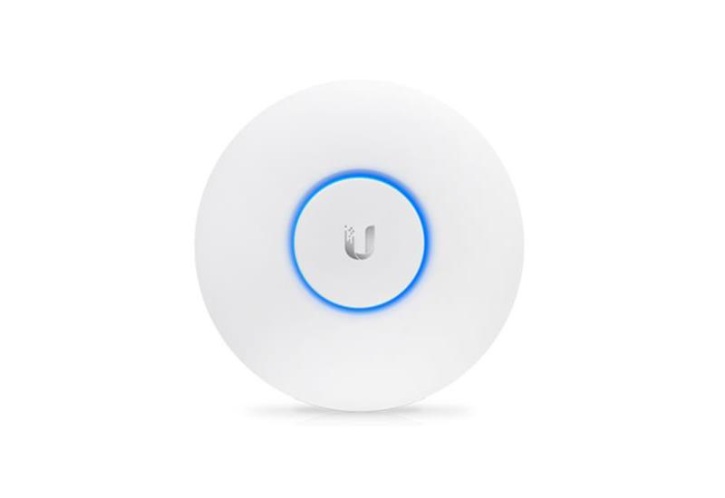
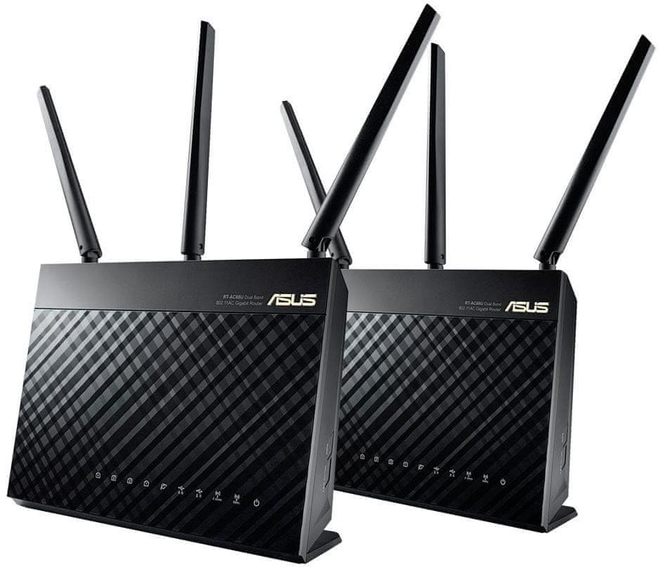
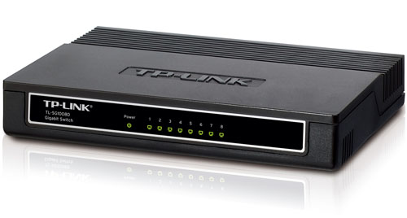
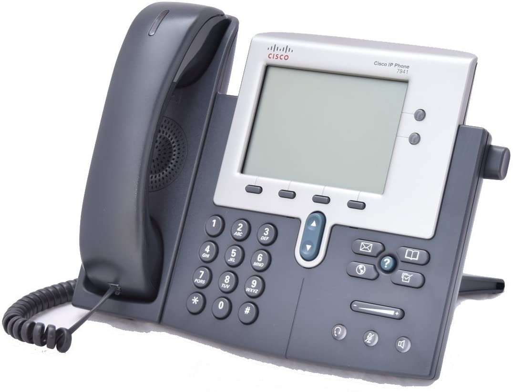

Hier ziet u een paar producten die wij aanbieden

iPhone 12 en iPhone 12 pro in diverse kleuren. Met het prachtige design en de nieuwste camera.

De Dell XPS 15 met een uiterst goede prijs kwaliteit verhouding. Geschikt voor alle soorten gebruik.

De prachtige LG CS 65 Smart TV met de meest natuurlijke kleuren en een strak design.

De UniFi AP AC Lite. Desuper moderne rookmelder die samenwerkt met je smartphone.

de ASUS RT-AC68U. De meest krachtige WiFi router voor de gamers.

Splits je ethernetkabel op met de handige TP-Link 8-Port Gigabit Switch en voorzie je hele huis van internet.

Deze Cisco IP Phone CP-7941G kantoortelefoon is ideaal voor grote kantoren met een levensduur van minimaal 15 jaar.
©2020